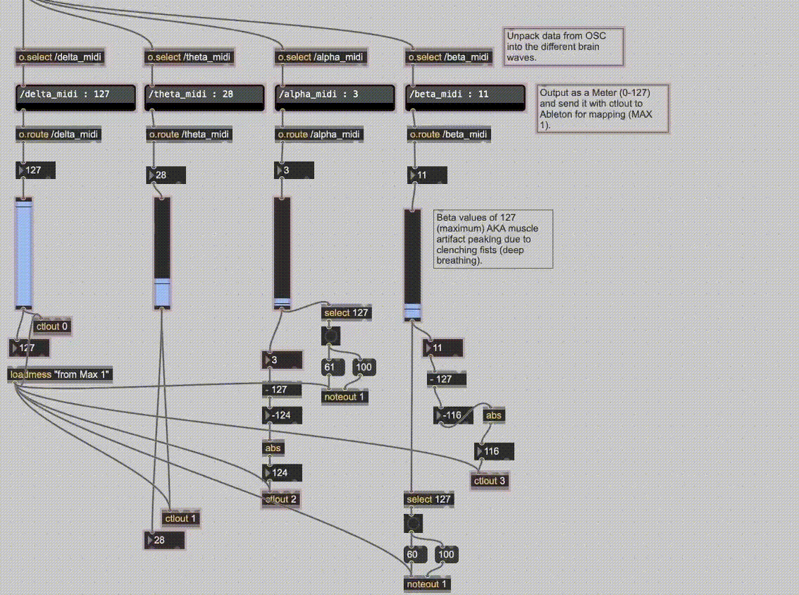

Abstract
Simulating the Internal Sacred Sound is an audio-visual experience that introduces the audience to a meditative sound installation. The project assigns electroencephalogram (EEG) data to MIDI parameters in real-time; Software interprets MIDI data from a structured meditation period to trigger pre-recorded musical elements, “translating” the internal experience into the physical world. Brain wave data is filtered into four categories (delta, theta, alpha, and beta waves) which are mapped to symbolic musical effects based on specific characteristics such as attention, relaxation, and mental interiorization. The purpose of this project is to use electrophysiology as a medium to paint a picture of the internal sacred sounds – the subtle sounds of the astral body and cosmic vibration - utilizing the brain as paint, the EEG and network programming as the paintbrush, and surround-sound speakers as the canvas. In this project, electrical signals of the brain, trained and directed by scientific meditation, influence projected visualizations and sound. With deepest reverence to Yoga, the ancient metaphysical system of which this simulation is guided, this project will work to bridge the divide between planes of consciousness and demonstrate the synergism between science and spirituality.
Introduction
In late January 2025 I very briefly heard the sounds of the muladhara (the earth center at the base of the spine), and the svadhisthana (the water center of the sacrum). Later that night, I described it in my notebook:
“Perfectly still with calmness of breath (OM Peace Amen) / Breathing in the light of ether and exhaling misinterpretation / The first sound awakens gently. Flickering candle suspended – the plume of incense smoke softly rising / Subtle vibrating motion around the golden bowl, slowly, scraping / A resonance unfolding. Merge with it – the voice of repetition. Steady now / The second sound is on a wholly different vibrational rate. Snowy, bright blue twinkling like icicle wind chimes in a cosmic breeze / Listen in the right ear, the positive receiving side of the body. Listen closely, further in, further in – words are just too smudgy now! I’m writing all over it, 1000 ‘its’ in this single pencil stroke. 1000 astral flutes sing their perfect chord – So the Cosmic Bard plays the Song of the Lord.”
The sounds were incredibly subtle, delicate, and easily banished by a single restless thought. I can’t recreate the sounds with instruments, in words, or in my head – but they are present in my consciousness nonetheless. Here are some more examples:
In “I Heard Whales (I Think)” by Mount Eerie, Phil Elverum describes the sound of “the real thing”:
“Walking slowly back and forth / On a bluff along the water / Seeing waves roll in the blowing / Far from any other person / I swear / I promise / I heard, I did / I heard actual music riding on the wind / Barely there / Though it couldn’t have been/ ’Cause I was definitely miles from any other people / And crashing water in my ears eclipsed everything / It sounded like… It could’ve been whales / Deep, watching, doing their singing / It could’ve been some ancient shipwreck / Still out there howling / Or it could’ve been science / Just wind and waves and rocks and angles / Or my hallucination could have been / The real thing / Something with no explanation / Heard, or not heard, inside of everything / And there is music no one hears / Unless they quiet all the way down / And lean way out over the edge“
Russian mystic Madame Blavatsky described the seven sacred sounds as such:
“The first is like the nightingale’s sweet voice, chanting a parting song to its mate. The next resembles the sound of silver cymbals of the Dhyanis, awakening the twinkling stars. It is followed by the plain melodies of the ocean’s spirit imprisoned in a conch shell, which in turn gives place to the chant of Vina. The melodious flute-like symphony is then heard. It changes into a trumpet blast, vibrating like the dull rumbling of a thunder cloud. The seventh swallows all other sounds. They die and then are heard no more.”
This project came into being in Fall 2024 as a side-effect of my deepening meditation practice and desire to hear the cosmic sound of Aum. I devised a plan for my thesis which would enable me to spend as much time as possible dedicated to training my mind in one-pointed concentration to achieve this goal. I committed myself to daily practice of the meditation techniques taught by Paramahansa Yogananda in the Self-Realization Fellowship Lessons, which have been an invaluable guide in this project and in this life. Other helpful guides have been found in Swami Sri Yukteswar’s The Holy Science and The Yoga Sutras of Patanjali. Interested readers will find great inspiration in Yogananda’s Autobiography of a Yogi.
Om Kriya Babaji Namaha!
This project and everything I do is dedicated to Babaji and the Gurus.
Electrophysiology
Electrophysiology is a branch of physiology pertaining to the electrical recording techniques and measurements of biological properties in the nervous system. One common modality of this study is the evaluation of brain activity known as electroencephalography (EEG). In this study, neural oscillations of the brain are recorded with electrodes placed along the scalp and measured as voltage fluctuations. EEG is an area of active research, and the understanding of brain activity is still in development.
An EEG displays patterns of electrical activity with an approximate range of frequencies between 1 and 30 cycles per second (Hz) and an approximate range of amplitudes between 1 and 100 microvolts (μV). These frequencies are divided into four main groups:
Delta waves: neural oscillations in the frequency range of 1-4Hz.
Theta waves: neural oscillations in the frequency range of 4-8Hz.
Alpha waves: neural oscillations in the frequency range of 8-12Hz.
Beta waves: neural oscillations in the frequency range of 12-30Hz.
Each group of neural oscillations are commonly associated with different states of consciousness and brain activity such as:
Delta waves, the longest and slowest, are associated with deep sleep and unconsciousness.
Theta waves are associated with deep relaxation, creativity, and dreaming.
Alpha waves are associated with relaxation and calmness.
Beta waves are associated with alertness and wakefulness, most common in normal waking consciousness.
g.Tec
Analysis of the brain’s electrical signals requires the use of a Brain Computer Interface (BCI). I had the wonderful opportunity to experiment with the g.Tec BCI system for this project. Following is a quick walk-through the system’s various functions and capabilities:
The first step is a biosignal amplifier which connects via USB to the computer for software interaction. The amplifier communicates with a wireless EEG system for signal processing, in this case the g.Nautilus Research Wearable EEG Headset: a 32-channel wireless EEG which uses gel-based EEG electrodes. The g.Tec Active Electrode System (g.SCARABEO Active Electrodes) uses active gel-based electrodes with a small form factor to support high-density recordings.
Software components: g.Tec’s BCI environment makes use of the High-Speed Online Processing environment for SIMULINK for real-time signal acquisition. The device driver provides access to sampling frequency, digital I/O, bandpass and notch filtering, visualization, and file storage, detailed further in the Programming section below. Footnote the g.Tec manual here.
Programming
The technical aspects of this project are three-fold.
EEG & Matlab
Python
Max & Ableton
EEG and Matlab
The g.Tec software package includes plenty of helpful tools within Matlab to make the best use of the EEG. I used Matlab’s Simulink, a block diagram environment to visualize the design of my code.
Step 1: My little office in Kidde is right next to the mechanical room. I had to remove the 50Hz hum that was causing some noise issues by using a notch filter.
Step 2: The activity of different brain waves are concentrated in different areas of the brain. To best capture a full picture of the brain, I chose to use 8 of the gel-based electrodes in the g.Nautilus positioned to capture the frontal (beta), occipital (alpha), temporal (theta), and parietal (delta) lobes. I organized the specific electrodes with Demux, and sent each of them to a bandpass filter to organize the brain waves.
Step 3: Each bandpass filter is sent to a Barlow filter, a g.Tec tool which inputs EEG data and outputs the mean amplitude and mean frequency.
Step 4: I averaged the electrodes (2 for each lobe) and sent them to a scope to visualize the raw data.
Step 5: Finally, I bussed the 8 outputs to Lab Streaming Layer (LSL), an overlay network for real-time exchange of data series between applications, which looks a little something like this:
[3.00202, 7.29211, 10.00192, 20.02029, 5.20183, 6.103845, 10.39462, 44.01935]
AKA [delta_freq, theta_freq, alpha_freq, beta_freq, delta_amp, theta_amp, alpha_amp, beta_amp]
Python
I owe exemplary acknowledgements to my wonderful friend and programming wizard Zachary Rosario for his indispensable expertise in designing the python code required to make this project a reality. See the code, licensing, and installation process for EEG to MIDI on Zach’s Github. The code is designed to collect data from an EEG stream, process that data, and send it over a network as MIDI values (0-127). Additionally, it visualizes the data in real time using plots.
Some constants and adjustable parameters include maximum amplitudes for each brain wave and a smooth step conversion. These two functions can be modified to balance the normalization of the data into reliable values between 0 and 127.
The main function: The program looks for an EEG stream using pylsl, a Python interface to the Lab Streaming Layer written by Christian Kothe, UCSD and managed by Chadwick Boulay, who offered valuable advice throughout the process of this project. The code creates an inlet and client setup to make connections to the EEG stream and send data via UDP and an Ethernet cable. A Real-Time Data Loop continuously reads the data, processing the man amplitudes and frequency, and smooths the data using the smooth step function. The data is stored and visualized in real time with a plot. An OSC (open sound control) bundle is created to package the data for use in Max.
The function of the Python program is to read the brainwave data sent by LSL, process and convert it into MIDI (0-127), and send that data to Max for the next steps.
Max and Ableton
In Max, a udpreceive object captures the Open Sound Control (OSC) package from the Python program. The OSC is then unpacked and utilized with Odot, a set of externals and language developed by Adrian Freed and John MacCallum, with support from Andy Schmeder, Ilya Rostovtsev, Rama Gottfried, Jeff Lubow, and others at the Center for New Music and Audio Technologies (CNMAT) at UC Berkley.2 The o.select patch separates the data into two sets of four brain waves as designated in Python (one for mean frequency and one for mean amplitude), which are then displayed with o.display “routed” to integer values. O.route does this by stripping off a portion of the address hierarchy, in this case, the text preceding the number value. The data is next patched to a slider, which outputs data from a range of 0-127 for MIDI application. Finally, ctlout sends the data to Ableton for mapping. Amplitude peaks for alpha and beta waves (127) transmit MIDI note messages with noteout and are used to trigger sounds in Ableton. This is very helpful for the performative aspect of the experience. When I take a deep breath and clench my fists, muscle artifacts cause alpha and beta amplitudes to “peak” (i.e. maximize in the smooth step function) and trigger a sound effect. This triggering is used in combination with the smooth variations of average frequency, which are mapped to the volume of different sounds to indicate changes in state of consciousness.
Performance
Sound Bath Meditation
The performance aspect of this project is based on the concept of sound baths, a modern variation of ancient Indian metaphysical system called Nada yoga.
Sound bath meditation is an element of restorative yoga that works to “bathe” the experiencer in waves of sound with healing instruments such as gongs, singing bowls, percussion, chimes, rattles, tuning forks, and the human voice itself. In her dissertation Sounds of Umbra and Light: Contemporary Sound Bath Practices in New York City, Gracelaine Osborne defines sound baths as “a collective and individual somatic listening event, where a facilitator uses a variety of instruments… as a focal point leading participants through a sonic and vibrational experience that is considered to be therapeutic, spiritual, meditative, musical, or contemplative in nature” (7). Osborne goes on to describe how “the rules of relationship between performer and audience melt, divisions between logical and intuitive thinking dissolve, and spiritual practice absorbs itself into artistic practice” (9). Occasionally, practitioners will lead the experiencers through a guided meditation alongside the instrumentation. Sound baths usually consist of a “performative practice” with emphasis placed “not on melodic content but on playing instruments that produce drones and focus on relatively simple rhythms, such as a pulsing heartbeat rhythm…[allowing] for a focused presence of harmonic overtones to be perceived and the potential for a trance state to be induced” (Osborne 7).
The goal of this project’s performance aspect is to manipulate pre-recorded “sound bath” elements with the brain during meditation.
The structure of the performance (seven sounds, seven sections).
Environment
The chosen location for the performance was the Semia Lab at Stevens Institute of Technology. (Surround sound)
MIDI Mapping
My default MIDI mapping for testing was loudness and panning. However, anything can be mapped to anything. We experimented with generative synthesis.
Future Implications
As described above, the process to record brain waves to manipulate an audio/visual environment currently requires a Brain Computer Interface, coding in Matlab to categorize and package the data, socket protocols to send the data, coding in Python to convert data into MIDI acceptable values (1-127) and Max patches to scale the data or retrieve “notes” to send to the DAW for mapping. This project has proven quite difficult for someone who doesn’t know how to code and has never taken a science class besides “Introduction to Biology for Non-Science Majors.” More time training my brain in meditation and system testing for consistency is required to fully explore the goals of this project as stated in the abstract. A true “simulation of the internal sacred sound” requires many more years of meditation, as well as dedicated teams of neuroscientists, computer scientists, and metaphysicists.
Future uses of this technology could include all in one “packages” such as an affordable headset called a Brain-Controlled MIDI Interface (BCMI). This headset would have 4 electrodes, one each for the frontal lobe, occipital lobe, temporal lobe, and parietal lobe to capture beta, alpha, theta, and delta waves respectively. A user-friendly design would allow the user to press buttons to adjust parameters like sample rate while keeping all the wires (and software) under the hood. The product will connect with Bluetooth to a biosignal amplifier which can be plugged in to a computer with USB. The amplifier will receive all signals and send them to your DAW of choice just like any MIDI controller.
I envision this technology finding a place in the future as a beginner’s introduction to consciousness control. For example, a child can be given the BCMI as a fun way to learn meditation. The “Beginner’s Guide to Calmness” preset may be selected, which will slowly increase the sound of a gong as the meditator’s delta waves increase. Thus, variations in the depth of concentration will be quite obvious and easily controlled.